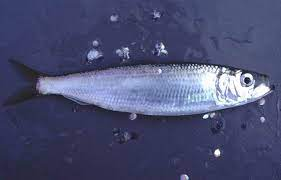
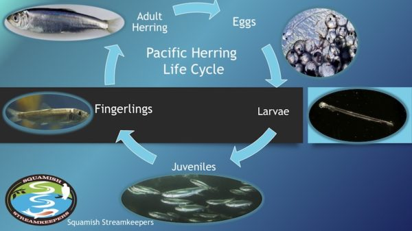
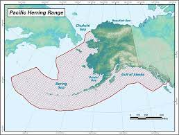
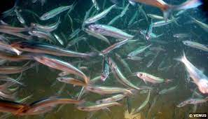

Ontario is quite big and rich with different types of fish species. Some of the most common species founf in Ontario include walleye, northern pike, smallmouth bass, rainbow trout, and yellow perch. But here we are going to discuss about one of the abundant species important for Canada's Pacific Coast's ecology is Pacific Herring.
The Pacific herring (Clupea pallasii) is a species of herring found in the Pacific Ocean near North America and northeast Asia. The top of the rear of the herring's body is bluish-green, while the sides and stomach are a brilliant silver colour. Pacific herring has a countershaded colour that makes it more difficult to see from above or below.
The top of the rear of the herring's body is bluish-green, while the sides and stomach are a brilliant silver colour. Pacific herring has a countershaded colour that makes it more difficult to see from above or below. The herring uses countershading to conceal itself from a variety of possible predators, such as bigger fish, seabirds, and marine mammals. 1 The eyes of the pacific herring are another distinguishing characteristic; they are relatively large for a species of its size.
> Individuals of this species can survive up to twenty years in the chilly waters of the Bering sea, though lifespans vary depending on environment. For spawning, herring move to nearby brackish waters. The males fertilise the females' eggs when they lay them on seaweed and seagrass beds. These protected environments are where herring larvae spawn. They migrate back to the ocean for two to three years once they reach the juvenile stage before they achieve maturity and come ashore to reproduce.
The ocean spawners that are most prevalent in southern US seas include the Atlantic round herring (Etrumeus sadina), Atlantic menhaden (Brevoortia tyrannus), and Pacific sardine or pilchard (Sardinops sagax). On the Atlantic coast, anadromous fish, such as alewife or glut herring (Alosa pseudoharengus), American shad (A. sapidissima), and blueback herring (A. aestivalis), live in the sea but reproduce in fresh water. Nonetheless, alewife and American shad are quite prevalent in Canadian coastal waters, where they are harvested for profit, even if they are also most plentiful there.
Herring is a key component of the diets of various species in the Pacific food web, so shifts in herring populations can have an impact on the entire ocean environment. For Chinook and Coho salmon as well as harbour seals, herring is a key food source in British Columbia. 3 Communities whose economies depend on the herring fishing value Pacific herring as well.
